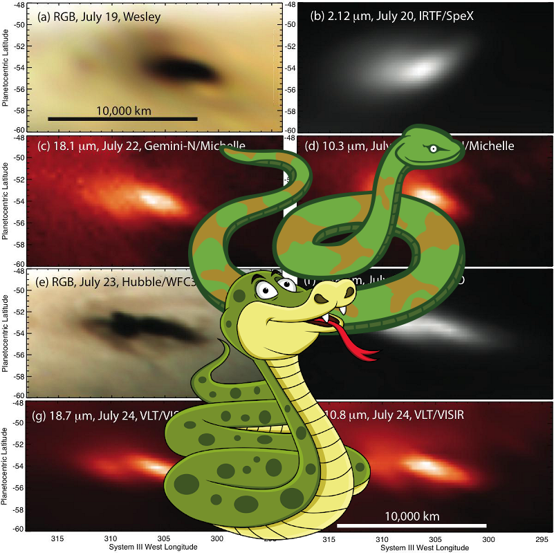

-
 An Unexpected Discovery @ Southern Pinwheel Galaxy M83.
An Unexpected Discovery @ Southern Pinwheel Galaxy M83. -
 An Unexpected Discovery, Something Strange @ Regional View of Bright and Dark Terrain!
An Unexpected Discovery, Something Strange @ Regional View of Bright and Dark Terrain! -
 An Unexpected Discovery + ESO 2.2-m WFI Image of the Tarantula Nebula.
An Unexpected Discovery + ESO 2.2-m WFI Image of the Tarantula Nebula. -
Something Strange, A Mystery – Eight Looks at the Jupiter Impact.
-
 A Mystery ; Spokes on Side of Saturn Rings
A Mystery ; Spokes on Side of Saturn Rings -
 A Mystery – Europa Fractured Surface
A Mystery – Europa Fractured Surface